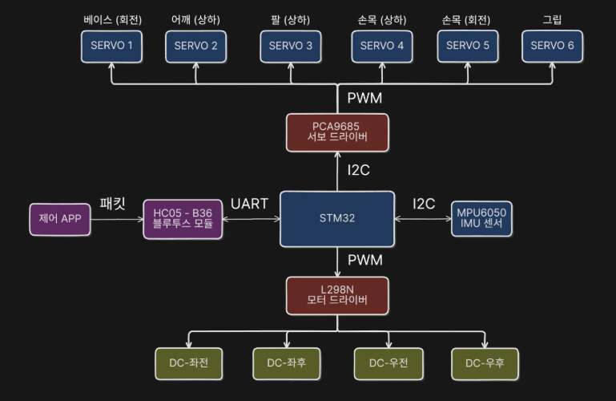

PROJECT 01EMBEDDED / CONTROL

MOBILE MANIPULATOR · SYSTEM ARCHITECTURE
01 ROBOTICS / EMBEDDED
Mobile
Retrieval Robot
이동성과 작업성을 결합한 모바일 물품 회수 로봇
Flutter 앱에서 Bluetooth로 4WD 이동 플랫폼과 로봇팔을 제어합니다. STM32, MPU6050, PID 제어를 연결해 직진 방향을 보정하고, 티칭한 동작을 다시 실행할 수 있도록 구성했습니다.
MY FOCUSRC카 구동 · IMU 기반 PID 제어
GitHub에서 코드 보기 ↗